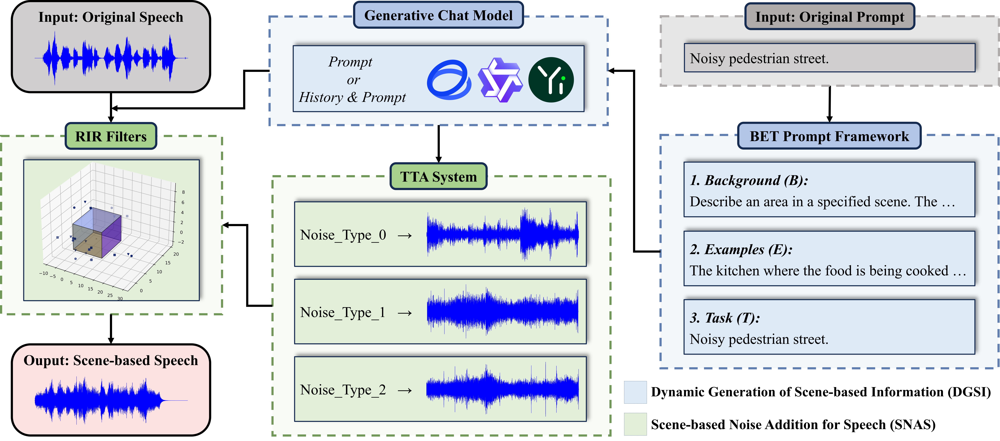

DGSNA: prompt-based Dynamic Generative Scene-based Noise Addition method
Zihao Chen, Zhentao Lin, Bi Zeng, Linyi Huang, Zhi Li, Jia Cai
Abstract
To ensure the reliable operation of speech systems across diverse environments, noise addition methods have emerged as the prevailing solution. However, existing methods offer limited coverage of real-world noisy scenes and depend on pre-existing scene-based information and noise. This paper presents prompt-based Dynamic Generative Scene-based Noise Addition (DGSNA), a novel noise addition methodology that integrates Dynamic Generation of Scene-based Information (DGSI) with Scene-based Noise Addition for Speech (SNAS). This integration facilitates automated scene-based noise addition by transforming clean speech into various noise environments, thereby providing a more comprehensive and realistic simulation of diverse noise conditions. Experimental results demonstrate that DGSNA significantly enhances the robustness of speech recognition and keyword spotting models across various noise conditions, achieving a relative improvement of up to 11.21%. Furthermore, DGSNA can be effectively integrated with other noise addition methods to enhance performance.

Fig. 1: A comprehensive overview of the DGSNA. In the DGSI component, the text description of the target scene is integrated into the BET prompt framework. This process generates a BET prompt that is subsequently fed into generative chat models to dynamically generate scene-based information. Within the SNAS component, the process is initiated by generating scene-based noise through TTA systems based on the types of scene-based noise identified in the scene-based information. Subsequently, RIR filters are used to combine this scene-based noise with the scene-based information and the original speech, thus providing comprehensive scene-based speech.

Fig. 2: Examples of scene dynamic generation. To facilitate the production of specific information about scenes by the generative chat model, this paper introduces a new prompt framework, BET, which is an acronym for Background (B), Examples (E), and Task (T). Initially, the B component entails the user providing a clear and detailed description of the specified scene's design and context (red font). Subsequently, the E component requires the user to input few-shot prompts, which include a text description of the target scene (blue font). Following this, the generative chat model generates scene-based information that aligns with the predefined task background (green font). Finally, the T component involves the user specifying requirements for the dynamic generation of the scene (purple font).
Prompt-based Dynamic Generative Scene-based Noise Addition Method
Modern metro:
| An area in the metro [metro] with (20, 4, 6). The microphone at (10, 2, 1.2), the voice at (8, 3, 1.4), the sound of passengers talking [the sound of passengers talking] at (0.5, 2.5, 1.2), the sound of train wheels scraping [the sound of train wheels scraping] at (8, 1.5, 1.6). |
Bright metro station:
| An area in the metro station [metro_station] with (8, 7, 5). The microphone at (3, 4.5, 1.2), the voice at (0.5, 3.5 ,1.6), the sound of broadcast [the sound of broadcast] at (3, 6.5, 1.2), the sound of announcements [the sound of announcements] at (0.5, 4.5, 1.2). |
Unused park:
| An area in the park [park] with (10, 8, 4). The microphone at (5, 3, 1.2), the voice at (3, 1.5, 1.6), the sound of birds chirping [the sound of birds chirping] at (1, 0.5, 1.2), the sound of leaves rustling [the sound of leaves rustling] at (9, 2.5, 1.2). |
Dark pedestrian street:
| An area in the pedestrian street [pedestrian_street] with (10, 5, 4). The microphone at (5, 2.5, 1.2), the voice at (7, 1.5, 1.6), the sound of footsteps [the sound of footsteps] at (0.5, 0.5, 1.2), the sound of vehicle [the sound of vehicle] at (8, 4.5, 1.2). |
Comfortable traffic street:
| An area in the traffic street [traffic_street] with (10, 5, 3). The microphone at (0.5, 0.5, 1.2), the voice at (5, 2.5, 1.6), the sound of traffic [the sound of traffic] at (0.5, 3, 1.2), the sound of horn [the sound of horn] at (5, 0.5, 2). |
Quiet balcony:
| An area in the balcony [balcony] with (6, 2.5, 4). The microphone at (5, 1.5, 1.2), the voice at (6, 1.5, 2), the sound of breeze [the sound of breeze] at (4, 0.5, 2), the sound of birds chirping [the sound of birds chirping] at (6, 1.5, 2). |
Luxurious bathroom:
| An area in the bathroom [bathroom] with (9, 6, 4). The microphone at (2.5, 2.5, 1.2), the voice at (6, 2, 1.6), the sound of running water [the sound of running water] at (2.5, 2.5, 2), the sound of shower [the sound of shower] at (6, 2.5, 2), the sound of steam [the sound of steam] at (2.5, 2.5, 2), the sound of music [the sound of music] at (0.5, 2.5, 1.2). |
Happy kitchen:
| An area in the kitchen [kitchen] with (6, 4, 4). The microphone at (2.5, 1.5, 1.2), the voice at (1, 1.5, 1.6), the sound of laughter [the sound of laughter] at (2, 2.5, 1.2), the sound of cooking [the sound of cooking] at (2.5, 2.5, 2). |
Tidy living room:
| An area in the living room [living_room] with (8, 5, 4). The microphone at (4, 2.5, 1.2), the voice at (1, 0.75, 1.2), the sound of speaking [the sound of speaking] at (0.75, 2.5, 1.2),the sound of TV [the sound of TV] at (4, 4.5, 1.2). |
Example Analysis
By leveraging the BET prompt framework alongside generative chat models, TTA systems, and RIR filters, we can effectively implement the DGSNA. This section elucidates the specific process through which scene-based speech is generated, illustrated by the analysis of examples.

Fig. 3: Workflow for generating scene-based speech. Here are the detailed steps: (a) Original Prompt: The process begins with the input text "noisy pedestrian street." (b) BET Prompt: The BET prompt has been strategically adapted to conform to the input-output structure and historical context management strategy employed by the Qwen-7B-Chat model. (c) Scene-based Information: The adapted BET prompt is fed into the Qwen-7B-Chat model, which processes the information and dynamically generates scene-based information. (d) Filter Metrics: The generated scene-based information is assessed using predefined filter metrics to confirm its suitability for subsequent processing. (e) TTA System: The TTA system utilizes each noise type specified in the scene-based information as a text embedding. These embeddings undergo a denoising procedure to generate precise audio prior representations. Subsequently, these representations are converted into actual audio samples through the combined use of a decoder and a vocoder. (f) Scene-based Noise: Each audio sample is generated at five distinct volume levels, mimicking real-world variations in sound intensity. (g) Original Speech: The original speech is obtained. (h) Scene-based Speech: The RIR filter uses the scene dimensions and source coordinates provided in the scene-based information to construct the RIR. Subsequently, it convolves both the generated scene-based noise and original speech with the corresponding RIR, culminating in the production of the scene-based speech.
Fig. 4: Visualized the scene and spectrogram of the example audio. Squares, inverted triangles, and circles each denote a unique type of sound source and their mirror sources. The number of mirror sources (e.g., 18) is calculated based on the product of the number of original sound sources (e.g., 3), the number of scene surfaces (e.g., 6), and the maximum specified order of reflection (e.g., 1). In outdoor scenes, these mirror sources are treated as additional sound sources of the same type. By including both original and mirror sources, the total number of sound sources in the scene amounts to 21. This comprehensive inclusion ensures a more detailed and accurate simulation, as it accounts for multiple interactions and the resultant acoustic effects within the scene.
| Original Speech | ||
|---|---|---|
| Scene-based Noise 1 | Scene-based Noise 2 | Scene-based Noise 3 |
| Scene-based Speech | ||
Acknowledgment
This work is supported in part by National Research and Development Key Project No. 2023YFF0905603, and in part by the 2022 Industrial Technology Basic Public Service Platform Project of China (No.2022-228-219), and in part by Key Laboratory of MIIT for Intelligent Products Testing and Reliability 2023 Key Laboratory Open Project Fund (No. CEPREI2023- 01).